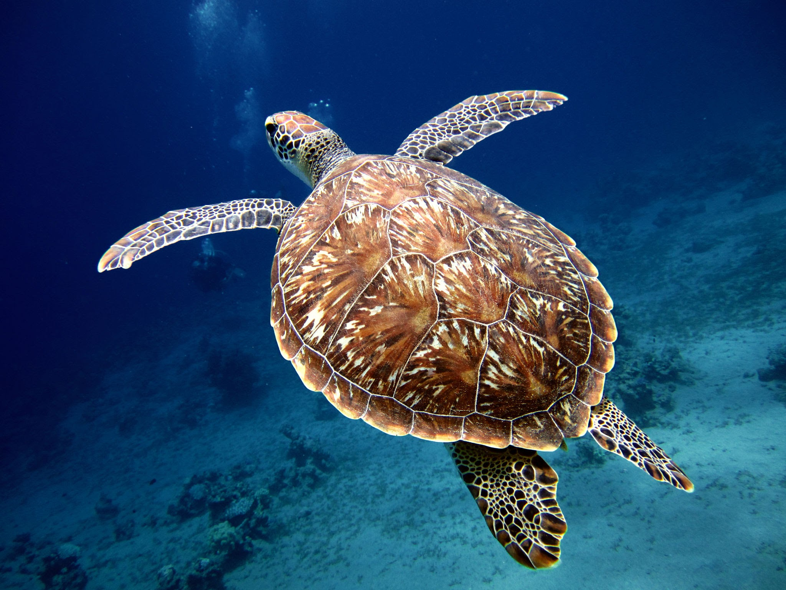

Introduction
Seven different sea turtle species can be found in our oceans, from the modest seagrass meadows of the Indian Ocean to the colorful reefs of the Coral Triangle and the sandy beaches of the Eastern Pacific. While these highly migratory species come ashore on occasion to bask or nest, sea turtles spend the majority of their lives in the ocean.
Sea turtles are reptiles that are uniquely adapted to sea life. They can dive to vast depths and swim long distances due to their hydrodynamic shape, enormous size, and powerful front flippers. Although sea turtles can stay submerged for hours at a time while resting or sleeping, they usually come to the surface several times per hour to breathe.

Growth and Development
Researchers do not yet know how long or where newborn turtles spend in the open sea. It is thought that they spend their first, most vulnerable years floating about the sea on huge beds of sargasso weeds, doing nothing but eating and growing. Turtles appear in feeding areas in nearshore waters once they reach dinner-plate size. They grow slowly and attain reproductive maturity between 15 and 50 years depending on the species. The physical appearance of a sea turtle cannot be used to identify its age. Some species are thought to be capable of living for more than 100 years.
Status of Species
The oldest known sea turtle fossils date back roughly 150 million years. They formerly traveled the world's oceans in groupings too numerous to count. However, demand for turtle meat, eggs, skin, and colorful shells has dwindled their populations in the last 100 years. The destruction of feeding and breeding grounds, as well as pollution of the world's oceans, are all wreaking havoc on the remaining sea turtle populations. Many breeding populations are already extinct, and entire species are being eradicated. Unless action is taken now, sea turtles may become an oddity found exclusively in aquariums and natural history museums in the near future.
More information on sea turtles,